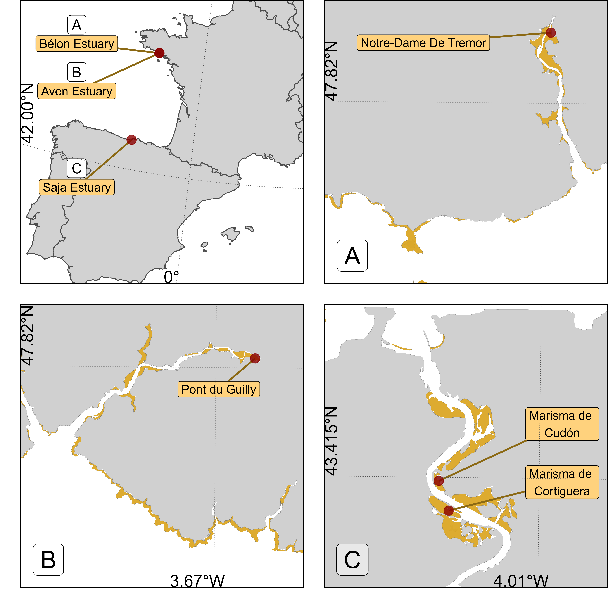
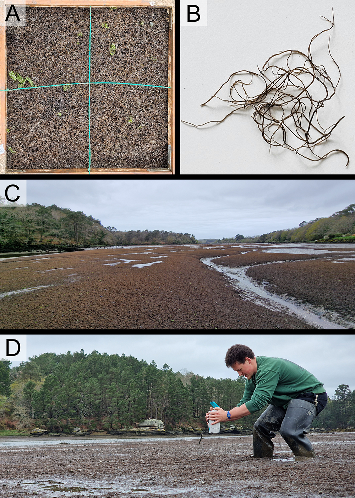
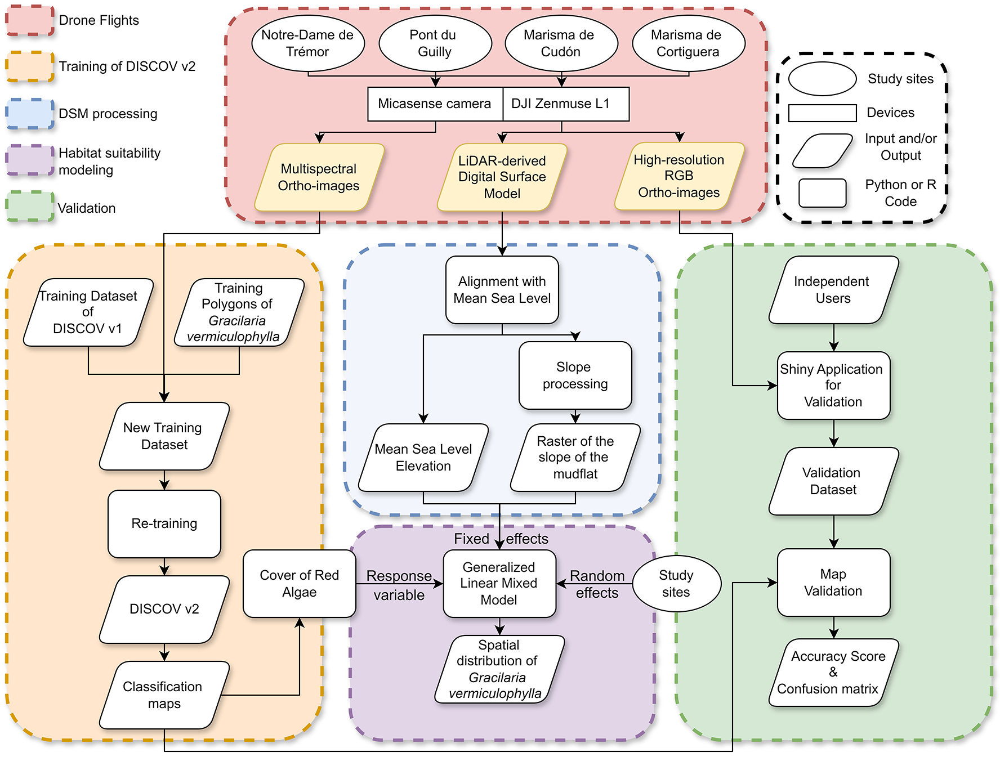
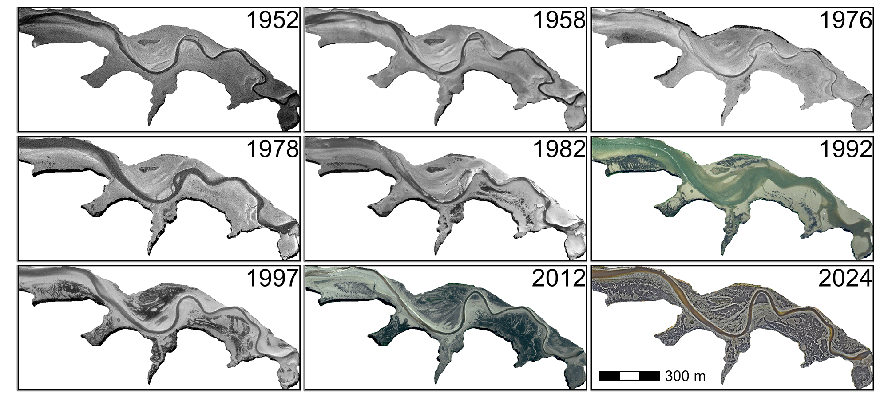
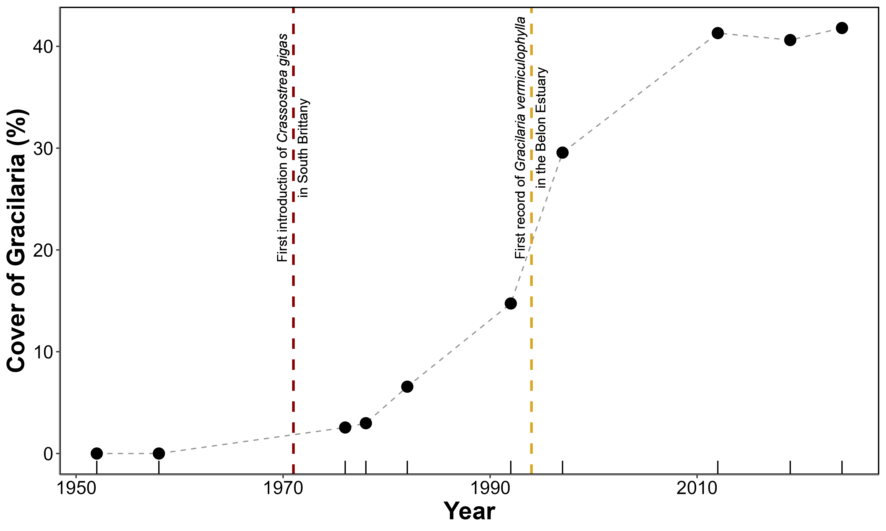
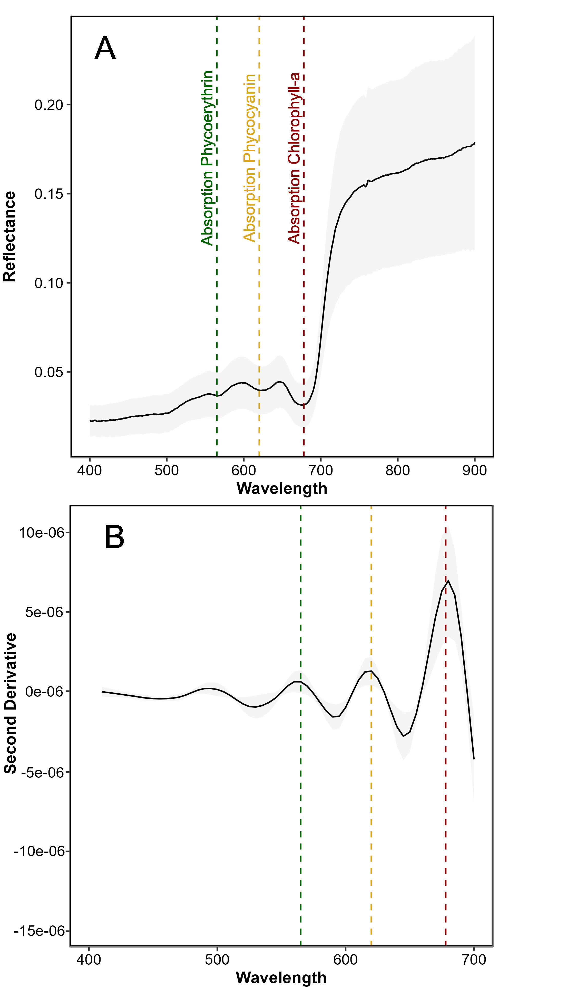
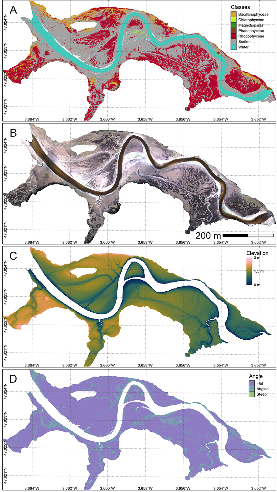
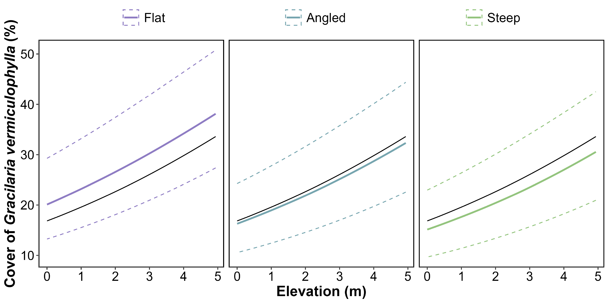
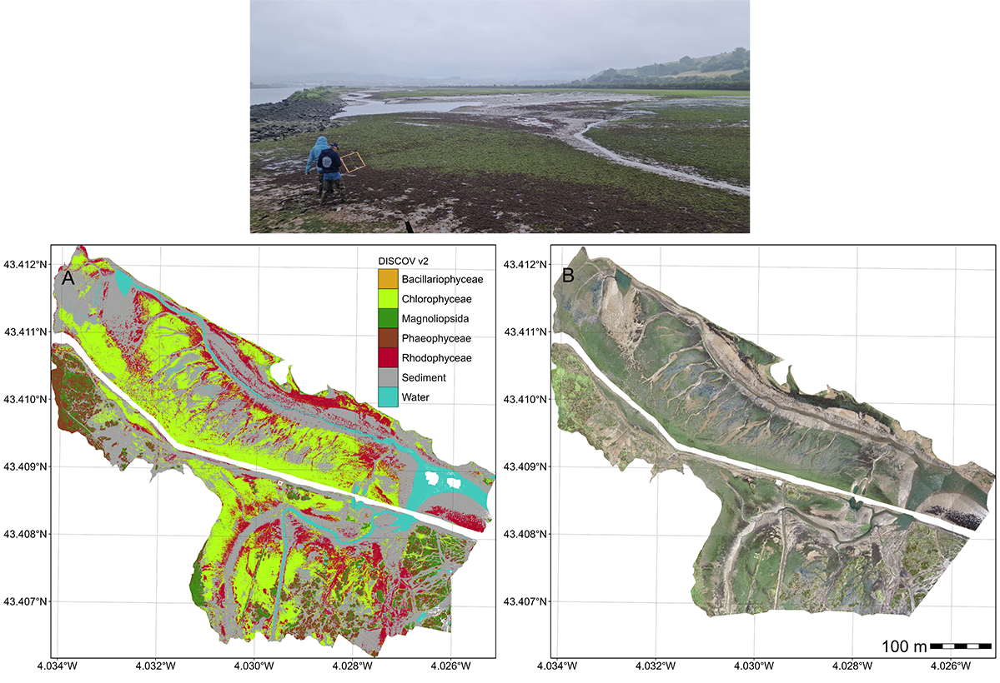

4 Spatial and Temporal distributions of the alien invasive Gracilaria vermiculophylla
Abstract
The invasive red macroalga Gracilaria vermiculophylla has significantly impacted intertidal ecosystems in temperate estuaries globally. This study utilized drone-based multispectral remote sensing to map the spatial and temporal distribution of G. vermiculophylla in its first documented European site, the Bélon Estuary, alongside additional sites in Spain and France. By adapting the neural network classification model DISCOV, trained with a comprehensive dataset, we achieved 91.1% accuracy in distinguishing G. vermiculophylla from other macroalgal taxa. Historical aerial imagery revealed a progressive expansion of G. vermiculophylla from its initial appearance in 1976, approximately 20 years before its first description in the literature, to extensive colonization by 2024. Concurrent LiDAR data enabled precise characterization of intertidal topography, demonstrating a strong association between algal cover, elevation, and slope. Dense mats were consistently observed in flat, elevated mudflat areas, with reduced presence in steeper or lower zones. These patterns highlight the species’ preference for stable sedimentary environments with reduced hydrodynamic forces. Temporal analyses also linked its spread to anthropogenic activities, notably aquaculture. Our findings emphasize the utility of high-resolution drone imaging for invasive species monitoring and habitat mapping, offering critical insights into the ecological dynamics of G. vermiculophylla and its drivers. This scalable method facilitates proactive management strategies by enabling early detection and detailed assessment of invasion patterns. The integration of remote sensing and in situ validation establishes a robust framework for ecological monitoring, contributing to the understanding of biological invasions and their environmental consequences. This approach can inform management interventions to mitigate the impacts of G. vermiculophylla and similar invasive species.
4.1 Introduction
The introduction of Non-Indigenous Species (NIS) in terrestrial, freshwater, and marine ecosystems is one of the major threats to biodiversity worldwide. In particular, the proliferation and rapid spread of Invasive Alien Species (IAS) can radically change the structure and functioning of marine ecosystems, requiring effective assessment and monitoring programs (Massé et al., 2023). In Europe, 874 NIS have been introduced to the marine environment so far (i.e. until 2020) and it is expected that the rate of biological invasions will continue to increase in the coming years (Zenetos et al., 2022). Macroalgae represent more than 40 % of the NIS introduced to Europe waters, with many species native to the Temperate Northern Pacific (Williams and Smith, 2007).
Amongst all invasive macroalgae, Gracilaria vermiculophylla (Papenfuss, 1967) (original name Gracilariopsis vermiculophylla (OHMI, 1956); also known as Agarophyton vermiculophyllum (Gurgel et al., 2018)), has spread extensively from its native distribution range in Japan and Korea (Terada and Yamamoto, 2002). This spread has occurred across temperate estuaries in North America, Europe, and other regions, facilitated by aquaculture and maritime activities (Krueger-Hadfield et al., 2017; Rueness, 2005; Weinberger et al., 2008).
In regions like the Baltic Sea and the eastern United States, it can affect native fucoid macroalgae and seagrasses negatively (Firth et al., 2024; Thomsen et al., 2013; Van Katwijk, 2003). It can also alter sediment composition (Nyberg et al., 2009), and disrupts trophic interactions (Ginneken et al., 2018). However G. vermiculophylla create new habitats for invertebrates and juvenile fish in a soft-bottom environment (Davoult et al., 2017) and, more generally, can positively enhance ecosystem processes (Ramus et al., 2017). The negative and positive effects of this species (Thomsen et al., 2009), which now dominate some coastal ecosystems, underscore the importance of monitoring and managing its population, particularly as climate change and anthropogenic pressures continue to facilitate biological invasions. G. vermiculophylla success as an invader stems from its tolerance to a wide range of environmental conditions, including temperature (Sotka et al., 2018), nutrient variability (Abreu et al., 2011), and salinity (Weinberger et al., 2008). Its growth capacity at low salinities (Nyberg, 2007; Rueness, 2005) explains its presence in the brackish waters of the Baltic Sea (Weinberger et al., 2008) but also in the mesohaline sheltered part of estuaries of the Atlantic coast of Europe (Surget et al., 2017). It is also present in confined areas of lagoons characterized by low hydrodynamism (Abreu et al., 2011; Sfriso et al., 2012). In Europe, it was first observed in 1996 in the Belon estuary (France) and later in many other estuaries on the Brittany coast of France (Rueness, 2005). It can be found on hard substrates such as invertebrate’s tubes and shells providing a substratum (Thomsen et al., 2007) or attached to pebbles and rocks (Terada and Yamamoto, 2002) but the largest populations are colonizing soft-bottom sediment and particularly estuarine intertidal mudflats (Surget et al., 2017). In this habitat, extensive dark red mats are observed at low tide, covering vast areas that have largely been unquantified in most studies. Therefore, G. vermiculophylla can establish populations in soft-bottom sediment habitats, previously devoid of macroalgae (Ramus et al., 2017). These mats are usually monospecific, with the alga thalli partially buried in the mud (Rueness, 2005; Surget, 2017). Intertidal mats can, however, be temporarily overgrown by ephemeral green macroalgae (Weinberger et al., 2008). In the European estuaries where G. vermiculophylla was first documented, large monospecific mats were reported to be confined to the upper intertidal zones (Rueness, 2005); however, their spatial distribution relative to the mudflat topography and elevation had not been quantitatively assessed. In coastal lagoons of the East Atlantic coast, Besterman et al. (2021) have shown that the mudflat topography was a significant predictor of its abundance. In fact, G. vermiculophylla has never been mapped using remote sensing techniques, and existing descriptions of its distribution lack spatially explicit mapping (Abreu et al., 2011; Sfriso et al., 2012; Thomsen et al., 2007; Weinberger et al., 2008).
RS has revolutionized our ability to monitor and manage coastal ecosystems, offering efficient and scalable methods for detecting environmental changes in intertidal vegetation across a wide range of spatio-temporal scales (Calleja et al., 2017; Davies et al., 2024a, 2024b; Valle et al., 2015; Zoffoli et al., 2021). Among remote-sensing technologies, drone-based imagery has recently emerged as a particularly promising tool for studying the spatial distribution of intertidal primary producers such as benthic microalgae (Román et al., 2024, 2021), seagrass (Chand and Bollard, 2021; Duffy et al., 2018; Román et al., 2021) and macroalgae (Diruit et al., 2022; Peidro-Devesa et al., 2024). While it lacks the temporal consistency of satellite missions, drone remote sensing makes it possible to acquire at extremely high spatial resolution (i.e. cm-scale), rapidly target specific areas of interest, and provide observations in overcast conditions. In particular, the potential of drone remote sensing for monitoring the surface area occupied by IAS has been demonstrated (Roca et al., 2022). Drone-based photogrammetry also makes it possible to characterize the distribution of intertidal vegetation together with mudflat geomorphology, thus improving our understanding of primary producers patterning (Brunier et al., 2022; Douglas et al., 2024).
This study applied a drone-based remote sensing approach to map G. vermiculophylla spatial distribution at a very-high spatial resolution (centimeter) in intertidal estuaries of European Atlantic coast. We adapted a neural network classification model, Drone Intertidal Substrate Classification Of Vegetation (DISCOV, (Oiry et al., 2024)) by re-training the model with new pixels of G. vermiculophylla. An in situ data validation dataset was obtained from Franch and Spanish sites to estimate the classification accuracy. LIDAR data were concurrently acquired to map the intertidal elevation accurately. A Generalized Linear Mixed Effect Model (GLMM) was used to examine the relationship between the seaweed spatial distribution and spatial metrics quantifying the mudflat topography. We expected the presence of G. vermiculophylla in mudflats to be associated with a specific height range as well as being more closely related to flat areas of the intertidal zone. In the Belon estuary (South Brittany, France) where it was first observed in Europe, a time series, starting from 1952, of RGB images was analysed to describe the temporal changes of its distribution over the last seventy years.
4.2 Materiels & Methods
4.2.1 Study sites
Field campaigns were conducted at three study sites across France and Spain. At each site, two locations were investigated (Figure 4.1). The Aven & Belon estuaries in South Brittany, France (Figure 4.1 A & C) are dynamic ria-type systems hosting diverse habitats, including tidal flats and subtidal zones with coarse, marine-origin sediments (Castaing and Guilcher, 1995; Michel et al., 2021). These habitats support key benthic species such as Scrobicularia plana, Cerastoderma edule, and Tellina tenuis, which play essential roles in sediment bioturbation and nutrient cycling (Blanchet et al., 2014; Tankoua et al., 2011). These estuaries serve as a nursery for juvenile fish and a feeding ground for migratory birds, with their ecological productivity driven by a mix of euryhaline and marine species adapted to salinity gradients (Blanchet et al., 2014). Oyster farming, particularly Crassostrea gigas, is a dominant activity, altering sediment dynamics and local biodiversity (Michel et al., 2021). Despite its ecological richness, the estuary faces pressures from nutrient loading and physical alteration (Tankoua et al., 2011).
The Saja-Besaya Estuary, situated along the Cantabrian Coast in northern Spain, is characterized by the confluence of the Saja and Besaya rivers near Torrelavega (Figure 4.1 C). The estuary, also known as San Martín de la Arena or Suances Estuary, has been subject to significant anthropogenic pressures, including industrial developments throughout the 20th century. These activities have led to contamination from mining, paper manufacturing, and carbonate discharges, classifying the estuary as highly polluted near its upper reaches (Ortega et al., 2005). This contamination impacted the water quality and biodiversity, with minimal aquatic life and sparse riverbank vegetation in its lower sections (Romero et al., 2008).
4.2.2 Remote sensing data acquisition and pre-processing

4.2.2.1 Hyperspectral measurements
At each location, hyperspectral reflectance signatures were recorded using an ASD FieldSpec HandHeld 2 spectroradiometer (Malvern Panalytical, Worcestershire, UK), which measures reflectance from 325 to 1075 nm with a spectral resolution of approximately 1 nm (Figure 4.2 D). Each spectrum was subsequently smoothed using a Savitzky–Golay filter (Savitzky and Golay, 1964) with a third-order polynomial and an 11-point window, selected to minimize noise while preserving salient spectral features. After this initial smoothing, the first and second derivatives were computed using a central difference approximation (Equation 4.1).
\[ R''(\lambda_i) \approx \frac{R(\lambda_{i+1}) - 2R(\lambda_i) + R(\lambda_{i-1})}{(\Delta \lambda)^2} \tag{4.1}\]
where \(R(\lambda_i)\) is the reflectance at wavelength \(\lambda_i\) and \(\Delta \lambda\) is the uniform spectral sampling interval.
4.2.2.2 Drone data
A total of four drone flights were conducted across the three study sites. All flights were performed at an altitude of 120 m and a speed of 10 m·s⁻¹. Two flights were carried out in the Saja Estuary on June 25, 2024, covering areas of 20.4 hectares (Marisma de Cortiguera) and 8.4 hectares (Marisma de Cudón), respectively (Figure 4.1). The other two flights took place in the Belon and Aven estuaries on April 11, 2024, covering areas of 21.3 hectares and 26.7 hectares, respectively.
4.2.2.2.1 Multispectral data
At each location, reflectance images with of 1.2 million pixels were captured using a DJI Matrice 300 quadcopter drone equipped with a Micasense RedEdge Dual MX multispectral camera. The camera recorded data across ten spectral bands, spanning from blue to (NIR) wavelengths (444, 475, 531, 560, 650, 668, 705, 717, 740, and 840 nm). To ensure consistent lighting conditions, the drone’s flight trajectory was aligned to maintain a solar azimuth angle of 90 degrees. Image acquisition was carried out with an overlap of 70% between side-by-side images and 80% between successive images along the flight path. A downwelling light sensor (DLS2) was used to measure real-time irradiance, enabling the correction of reflectance values for variations in light intensity caused by changing cloud cover during the flight. The raw image data were subsequently calibrated to reflectance using a calibration panel with ~50% reflectivity, provided by the camera’s manufacturer. Images were processed using structure-from-motion photogrammetry software (Agisoft, 2019) to generate multispectral ortho-mosaics for each flight. The ortho-mosaicking workflow was consistent across all flights. Initially, key tie points were identified within each image and across overlapping images to create a sparse point cloud. This point cloud was refined by removing noisy points using a reprojection accuracy metric. Subsequently, a dense point cloud was generated using a structure-from-motion algorithm. A digital surface model (DSM) was then created through surface interpolation of the dense point cloud, which served as the basis for reconstructing the multispectral ortho-image (Nebel et al., 2020). The resolution of the multispectral ortho-mosaic obtained was 8 cm per pixel.
4.2.2.2.2 LiDAR data
Using the Matrice 300 Series Dual Gimbal Connector, a DJI Zenmuse L1 LiDAR and RGB sensor was mounted on the drone alongside the multispectral camera. This setup enabled the simultaneous capture of LiDAR point clouds, high-resolution RGB images, and multispectral images collected by the MicaSense RedEdge Dual MX during the same flight. The same processing workflow as Section 4.2.2.2.1 was applied to process LiDAR RGB images, resulting in ortho-mosaic with a resolution of 2.5 cm per pixel. Since the mapping focused solely on surfaces without dense vegetation, the LiDAR measured only a single return. Operating in repetitive scanning mode with a sampling rate of 240 kHz, the system achieved a point density of 350 points per square meter. The LiDAR point cloud was extracted and converted into LAS format using DJI Terra software. The LAS point cloud was then imported into Agisoft Metashape (Agisoft, 2019) to generate a DSM with a resolution of 2.5 cm. From the DSM, the inclination angle of each pixel based on a grid of 8 surrounding pixels was computed using the terrain function of the ‘terra’ package in R (Hijmans, 2024). The angle of the mudflat was categorized into three classes: Flat (angle < 10°), Angled (10° ≤ angle ≤ 40°), and Steep (angle > 40°).
4.2.3 Scene classification
In a previous study we developed a neural network classification model (DISCOV; Oiry et al. (2024)), previously applied with success to Micasense reflectance data for mapping intertidal vegetation along the Portuguese and French Atlantic coasts, has been used in this study. The training dataset of DISCOV v1.0 was updated Figure 4.3. As shown by Oiry et al. (2024) the DISCOV v1.0 model was trained using only 5771 Rhodophyceae pixel (3% of the training dataset). To fill this, gap the original training dataset of DISCOV v1.0 was updated using new training pixel coming from the 5 drone flights (Section 4.2.2). A total of 472.000 pixels were added to the DISCOV training dataset from version 1 (Section 4.6.1).
To validate the DISCOV model, a user-friendly Shiny app was developed. This app enabled independent users to photo-interpret snapshots of the ortho-mosaic from each drone flight (Chang et al., 2024; Oiry, 2024). Users could click on various parts of the snapshots to indicate the type of vegetation they believed was present. Using this method, three independent users contributed to creating a validation dataset of 6755 pixels across 79 snapshots distributed among the four drone flights (Section 4.6.2). The validation dataset was then simplified into two classes: The presence or absence of Red Algae (Figure 4.3).

4.2.4 Historical Presence of Gracilaria vermiculophylla in the Belon estuary
To assess the historical presence of G. vermiculophylla in the Belon Estuary, aerial imagery from flight campaigns was obtained via the IGN platform “Remonter Le Temps” (IGN, 2024). Nine images were selected between 1952 and 2012 from the IGN platform and an additional one has been added for the year 2024 (Section 4.6.3). Since most of the images retrieved from “Remonter Le Temps” were digitized versions of physical photographs, georeferencing was required.
For each date, polygons have been drawn around G. vermiculophylla patches by visual photo-interpretation. These polygons were used to calculate the total area of the mudflat covered by macroalgae within a common extent of 30 hectares in Pont de Guilly, located in the Belon Estuary, South Brittany, France.
4.2.5 Statistical analysis
We used a Generalized Linear Mixed Model (GLMM) within a Bayesian framework using the ‘brms’ package in R (Bürkner, 2021, 2018, 2017). The response variable, the cover of G. vermiculophylla, was modeled using a Beta distribution as a function of bathymetry elevation and the slope of the mudflat (categorized as Flat, Angled, Steep). A random intercept for site was included to account for potential hierarchical variation among sampling sites. The Beta distribution was chosen because the response variable is continuous and constrained between 0 and 1. We visually assessed sample vs. fitted residuals and quartile–quartile (Q-Q) plots to ensure that the model assumptions, including appropriate model fit and absence of patterns in residuals, were satisfied.
4.3 Results
4.3.1 Historical records in the Belon estuary
A clear shift from bare sediment to vegetated mudflats has been observed over the past 70 years, corresponding to the colonization of the Belon Estuary by G. vermiculophylla (\(Figure~\ref{fig-HistoricalMap_g}\)). In the 50s, the tidal flats showed no detectable presence of vegetation. In the 70s some darkening of the sediment became discerbible, but the first unambiguous presence of G. vermiculophylla was 1982. During the subsequent decades, the cover of algae increased and in 2024, the high-resolution mapping done with the drone showed that monospecific mats of G. vermiculophylla exclusively colonised the mudflat.
From the early recordings in the 1950s through the late 1970s, Gracilaria vermiculophylla coverage remained effectively at 0% (\(Figure~\ref{fig-HistoricalMap_g}\)). Shortly after the introduction of Crassostrea gigas in the estuary, in 1971-1972 (see vertical red dashed line in the figure), the first detectable presence of G. vermiculophylla emerged. By 1976, it covered 2.5% (0.7 ha) of the Pont du Guilly area, and by 1978 it had increased slightly to 3.0% (0.9 ha). From 1982 onward, coverage expanded more rapidly, increasing from 6.6% (2.0 ha) in 1982 to 14.7% (4.5 ha) in 1992 and nearly 30% (9.0 ha) by 1997. This upward trend continued into the 21st century, peaking at 41.2% (13.3 ha) in 2012. Although coverage fluctuated somewhat thereafter (40.6% in 2019 and 41.8% in 2024), it remained consistently high, indicating sustained and widespread colonization.


4.3.2 Spectral description
The spectral signature of G. vermiculophylla was characterized by a reflectance pattern in the visible region of the spectrum shaped by the photosynthetic and accessory pigments common to all rhodophytes (Figure 4.6 A). This pattern was primarily driven by phycoerythrin and phycocyanin, which exhibited maximum absorption peaks at approximately 565 nm and 620 nm, respectively. An additional absorption feature around 495 nm was likely attributable to accessory carotenoid pigments. The most pronounced absorption peak occurred at 675 nm, corresponding to chlorophyll-a absorption. The second derivative analysis clearly highlighted the inflection points corresponding to the main absorption peaks at 495, 565, 620, and 675 nm, allowing for more precise identification of the wavelength associated with these pigments (Figure 4.6 B).

4.3.3 Spatial distribution
The classification map obtained from the neural network algorithm is shown for the Belon estuary (Figure 4.7 A). Among the main classes of the intertidal vegetation, the class of Rhodophyceae (red macroalgae, in red) was the dominant algal cover, forming extensive, continous patches colonizing almost the entire mudflat. In contrast, Bacillariophyceae (diatoms biofilm, in orange) and Chlorophyceae (Green macroalgae, in green) exhibited more localized distributions, typically restricted to smaller, fragmented patches. A few Phaeophyceae (brown macroalgae, in brown) were confined to limited patches in the upper intertidal attached to rocks. In the Saja esturay, Rhodophyceae cover was more scarsed, due to a strong Chlorophyceae presence on this site (Annexe D: Section 4.6.4).
Across all study sites the presence/absence of G. vermiculophylla was classified with a global accuracy of 91.1 %, a sensitivity of 96.5 % and a specificity of 71.5 %.
The elevation map showed that the main mats of G. vermiculophylla were between 1 and 2 m above mean sea level (Figure 4.7 C). Algal presence was markedly elevation-driven, with lower intertidal zones closer to the tidal channel consistently exibiting reduced macroalgal cover. Most of the intertidal flats exibited slope below 10° (Violet, (Figure 4.7 D). Angled surfaces (10° < Slope < 40°) often found next to tidal channels were exibiting almost no vegetation cover.

Overall, the percent cover of G. vermiculophylla increased with elevation, as shown by the general relationship (Figure 4.8, black line), which rises from approximately 16% at the lowest elevation to about 30% at the highest elevation. This indicates a consistent positive association between elevation and algal cover.
When accounting for slope, the flatter the slope, the higher the percent cover of G. vermiculophylla. For flat slopes, the cover ranged from approximately 20% at the lowest elevation to nearly 38% at the highest elevation. In contrast, the increase was less pronounced for angled slopes, ranging from around 16% to 32%. The cover was the lowest on steep slopes, starting at about 15% and rising only slightly above 30% at the highest elevation (Figure 4.8). This demonstrates that slope modifies the relationship, with flatter slopes supporting a greater percent cover of the algae.

4.4 Discussion
4.4.1 Drone mapping G. vermiculophylla with machine learning
In this study, we produced the first spatial distribution maps of the invasive red macroalgae Gracilaria vermiculophylla using a multispectral drone survey conducted at low tide in Atlantic estuaries representing varied environmental conditions. The species formed monospecific mats in southern Brittany, while in the Cantabrian region of Spain, it was mixed with other intertidal vegetation. Distinguishing among these vegetation types was a key prerequisite for the analysis. To achieve this, we developed a new version of the deep learning-based classification model DISCOV initially developed to discriminate seagrass from green macrophytes (DISCOV ; Oiry et al. (2024)). DISCOV v2.0 was based on an improved training dataset, which included a larger number of pixels on red macroalgae covering approximately 26 % of one million pixels and allowed the model to achieve an accuracy of 91.1 % in predicting G. vermiculophylla presence.
Rhodophytes possess unique phycobilin pigments, enabling their spectral distinction from other macroalgal groups (Douay et al., 2022; Mcilwaine et al., 2019; Olmedo-Masat et al., 2020). Even with the ten-band multispectral sensor used in our study, it remained feasible to discriminate the major classes of intertidal macrophytes (Davies et al., 2023; Oiry et al., 2024; Román et al., 2021). Note that DISCOV V2.0 identifies G. vermiculophylla at the class level (Rhodophyceae) rather than at the species level. Although it is unlikely that Gracilaria can be precisely distinguished at the species level using standard multispectral, hyperspectral data may allow mapping on a finer taxonomic resolution (Douay et al., 2022; Olmedo-Masat et al., 2020). Ecological factors also contribute to distinguishing G. vermiculophylla. Macroalgae require hard substrates for the spores to settle, but some Gracilariales species can establish on soft-bottom sediments. G. vermiculophylla is found on mudflats, anchoring its thalli in the top 10 cm of mud (Surget, 2017), and inhabiting the upper intertidal zone of estuaries in Western Europe—an unusual trait for a Rhodophyte (Abreu et al., 2011; Davoult et al., 2017). By effectively detecting G. vermiculophylla in these soft-sediment environments, the methodology developed in this study provides a framework for mapping this species in coastal areas. A multispectral sensor is necessary to obtain spatially explicit maps when this species is mixed with other classes of intertidal vegetation. However, when monospecific mats are the primary vegetation colonising tidal flats, RGB drone imagery can be exploited.
4.4.2 G. vermiculophylla spatial distribution and mudflat topography
The spatial distribution of G. vermiculophylla across intertidal zones of West European estuaries revealed a relationship with mudflat topography, significantly influencing algal abundance. Our results showed that higher elevations within the intertidal zone supported a greater abundance of G. vermiculophylla. Thomsen et al. (2009) observed this species inhabiting areas as elevated as the mudflat-marsh border. This capacity to colonise the upper intertidal is related to its physiological plasticity and high-stress resistance (Thomsen et al., 2007). Its capacity for sustained growth under desiccation, light and salinity extremes (Nyberg, 2007; Raikar et al., 2001; Rueness, 2005) explains its successful establishment at high elevations in mesohaline estuarine environments (Weinberger et al., 2008). In the Belon estuary, most of G. vermiculophylla was found between 1 and 2 m above MSL, which are high elevations for which rapid desiccation of this macroalgae was described by Thomsen and McGlathery (2007) in shallow lagoons of the Eastern Atlantic coast. The thick mat structure observed in Western Europe may explain this discrepancy by retaining more water. A lower hydrodynamism also characterizes these areas. Unlike seagrasses, another type of marine plant that can colonize soft sediment, but possesses rhizomes that provide robust anchorage, G. vermiculophylla lacks such specialized structures. Consequently, it is more vulnerable to disturbance and displacement by waves and tidal currents than seagrass. In the estuaries of South Brittany, this species can bury part of its thalli into the upper layers of soft sediment (Surget, 2017). This mode of anchorage likely helps G. vermiculophylla withstand strong currents or wave action and contributes to forming these thick mats. The creation of such mats probably also requires areas with high sedimentation rates, typically found in the upper intertidal or the vicinity of marshes, promoting sediment deposition (Mudd et al., 2010). This observation aligns with the findings illustrated in \(Figure~\ref{fig-HistoricalMap_g}\), which show that one of the first areas colonized by G. vermiculophylla in the Belon estuary was located near a salt marsh patch. These dense mats enhance its stability and facilitate its persistence and proliferation in intertidal and estuarine environments with low to moderate hydrodynamic conditions (Surget, 2017).
There was a significant negative relationship between slope steepness and the density of G. vermiculophylla. Besterman et al. (2021) showed that mudflat topography was a good predictor of G. vermiculophylla abundance, while Thomsen et al. (2009) reported a high abundance in marshes with low slopes. Mudflat topography integrates several flow-related variables (Besterman et al., 2021). Steeper slopes are typically associated with higher current velocities during tidal exchanges, resulting in stronger erosion and reduced sedimentation. Areas with steeper slopes may also limit the retention of organic matter and nutrients, reducing the availability of essential resources needed for algal growth. In contrast, flatter areas within the intertidal zone are more likely to accumulate fine sediments and retain water for longer durations during low tides, creating a more stable and nutrient-rich environment conducive to G. vermiculophylla proliferation. These low-slope conditions may also favour dense algal mat formation, further stabilising the sediment and promoting growth.
4.4.3 Monitoring Gracilaria vermiculophylla Invasion Dynamics
The invasive red macroalga G. vermiculophylla represents a significant example of delayed recognition and documentation in biological invasions. Historical aerial imagery and photo-interpretation analyses from the Belon Estuary suggest the initial presence of this species in 1976 \(Figure~\ref{fig-HistoricalMap_g}\), preceding its first formal description in European waters in 1996 by two decades (Rueness, 2005). This delay likely stems from insufficient early monitoring frameworks and limited awareness of its ecological impacts, which often characterize the early stages of invasive species colonization. It also arises from the fact that other red macroalgae species resembling G. vermiculophylla and native to this area (e.g. Gracilaria gracilis) were already present at sites where G. vermiculophylla was introduced, further complicating its detection. This lag highlights challenges associated with detecting, monitoring, and reporting invasive species and their ecological impacts during early colonization.
The appearance of G. vermiculophylla corresponds with the introduction of the Pacific oyster (Crassostrea gigas) into the estuary a few years before, between 1971 and 1975, and a potential vector for algal dispersal through aquaculture activities (Grizel and Heral, 1991; Rueness, 2005). Aquaculture practices, such as the transfer of oyster spat and equipment between regions, facilitate the unintentional transport of invasive algal fragments. For instance, G. vermiculophylla may have attached to shells or nets used in oyster farming, enabling its spread to new estuarine habitats. After initial establishment, the alga progressively occupied suitable habitats, consistent with theoretical invasion dynamics involving a lag phase followed by rapid spread (Arim et al., 2006). The establishment of G. vermiculophylla likely induced changes in sediment characteristics, trophic interactions, and habitat structure prior to formal recognition (BenDor and Metcalf, 2006). Such shifts are comparable to documented impacts in similar systems (Crowl et al., 2008; Gallardo et al., 2016), yet remain difficult to quantify without early monitoring data. Remote sensing using multispectral drone mapping can provide high-resolution, spatially explicit data, but it must be combined with repeated, in situ field measurements to maximize its potential (Chadwick et al., 2020; Zoffoli et al., 2023). Temporal repetition makes it possible to assess dynamic processes, and integrating these mapping approaches with in situ analyses of local infauna, carbon cycling, riverine inputs, and sedimentology yields valuable data for local managers. Such an integrated approach can determine how the invasive algae affects the local ecosystem and, more broadly, forecast its potential impact on other estuarine environments facing similar invasion events.
The temporal gap between the first presence and documentation reflects limitations in early surveillance, potentially underestimating ecological and economic impacts during the initial colonization phase. Studies on invasion dynamics demonstrate that early detection is crucial for effective containment and management, particularly before an invasion reaches the exponential spread phase, which complicates control efforts (Arim et al., 2006; BenDor and Metcalf, 2006; Elton, 2020). Specific practices, such as the removal of early-stage algal mats, implementation of physical barriers to prevent further spread, and public awareness campaigns, could mitigate the impacts during this critical phase (Green and Grosholz, 2021; Jones et al., 2021; Simberloff, 2021). In the Belon Estuary, G. vermiculophylla appears to have thrived under ecological conditions favorable to its proliferation, enabling the formation of dense mats in about 6 years (between 1976 and 1982; \(Figure~\ref{fig-HistoricalMap_g}\)) after its first detection in the estuary. This undocumented growth likely contributed to substantial changes in the estuarine ecosystem. Historical aerial imagery has provided valuable insights into long-term invasion patterns by enabling the retrospective identification of shifts in habitat characteristics. Modern drone-based systems enhance this capacity through high spatial and temporal resolution, enabling the rapid detection of invasive species at early stages of establishment. Remote sensing facilitates timely interventions by capturing detailed data on the spatial distribution and habitat preferences of species such as G. vermiculophylla, allowing stakeholders to take rapid measures to limit the invasion. Integrating these tools into routine monitoring programs offers a scalable and efficient means to track invasive species dynamics and inform targeted management strategies, such as habitat restoration, removal of invasive mats, and prevention of further spread through targeted interventions. Expanding these methodologies to lower-cost RGB-based detection would further democratize access to monitoring tools, enabling more widespread application for early detection and rapid response. These tools could also be integrated into community-driven management programs, empowering local stakeholders to monitor invasive species and implement timely control measures.
4.5 Conclusion
This study demonstrated the potential of high-resolution drone-based multispectral remote sensing to map the spatial and temporal distribution of the invasive red macroalga G. vermiculophylla in European estuaries. By employing the DISCOV machine-learning model, updated to include an extensive dataset of Rhodophyceae pixels, we achieved a classification accuracy of 91.1%. Our analysis revealed a clear spatial relationship between G. vermiculophylla and intertidal topography retrieved from LiDAR, with its cover consistently higher in flat, elevated mudflats compared to lower and steeper areas. The temporal progression, derived from a historical dataset spanning over seven decades, highlights the progressive establishment and expansion of the algae. Notably, our remote sensing analysis confirmed the presence of G. vermiculophylla in the Belon Estuary approximately 20 years before its first scientific description, emphasizing the value of retrospective mapping. The historical aerial imagery analysis provided crucial insights into the dynamics of G. vermiculophylla’s invasion, revealing a lag phase followed by rapid colonization. This expansion coincided with the development of Pacific oyster aquaculture, suggesting a potential link with the proliferation of this invasive species. These findings underscore the crucial role of remote sensing in ecological research, particularly in studying invasive species (Roca et al., 2022). Integrating hyperspectral sensors could enhance species-level discrimination while adopting low-cost RGB-based methods could extend monitoring capacities to a broader range of stakeholders. The larger mats could be detected at a coarser spatial resolution, and a perspective of this work is to use Sentinel 2 satellite images at a 10 m resolution (Davies et al., 2024b). These advancements will be crucial for informing management strategies, fostering community engagement, and preserving estuarine biodiversity in the face of ongoing ecological changes.
4.6 Annexes
4.6.1 Annexes A - Updated training dataset
4.6.2 Annexes B - Validation dataset
4.6.3 Annexes C - List of historical images records
Date | Type | Data Source | Resolution (cm per Pixel) |
|---|---|---|---|
1952-04-26 | Black and White | IGN | 10 |
1958-04-22 | Black and White | IGN | 90 |
1976-07-? | Black and White | IGN | 4 |
1978-08-22 | Black and White | IGN | 44 |
1982-08-11 | Black and White | IGN | 44 |
1992-05-17 | True Colour | IGN | 70 |
1997-04-11 | Black and White | IGN | 64 |
2012-07-24 | True Colour | IGN | 18 |
2024-04-11 | True Colour | Drone Flight | 3 |
4.6.4 Annexes D - Maps of the Saja estuary, Spain
